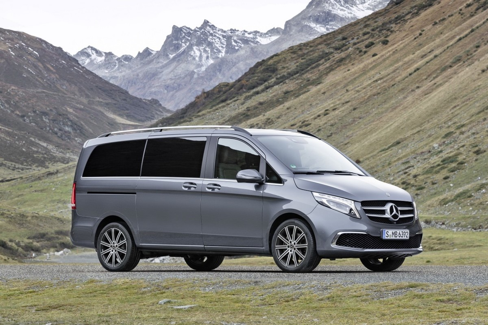
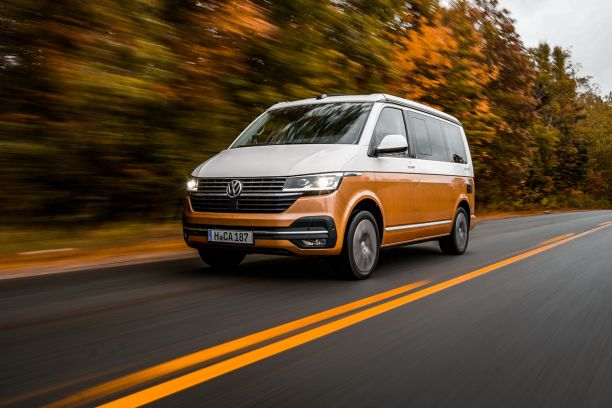
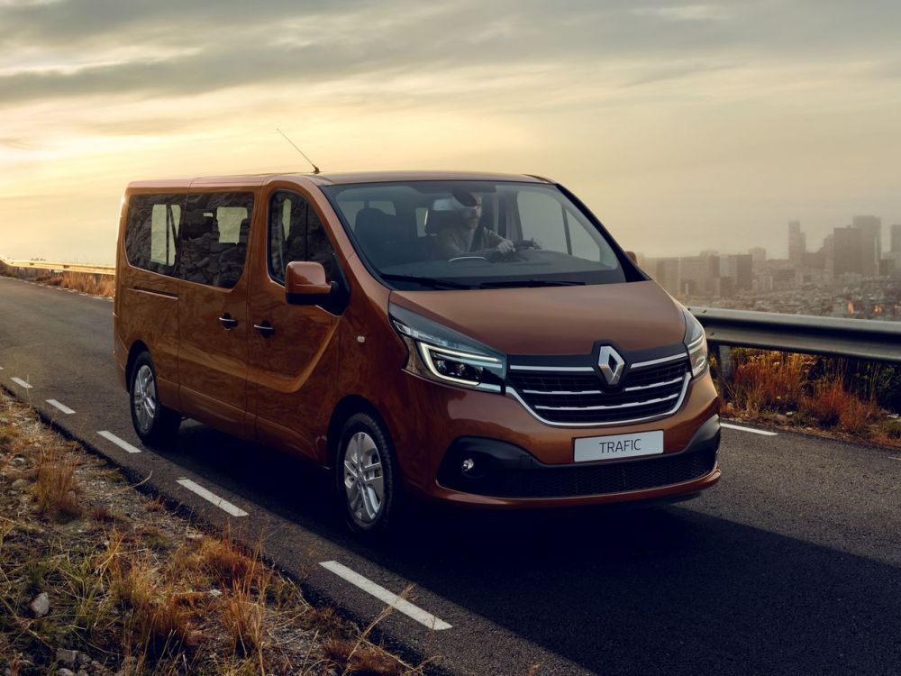
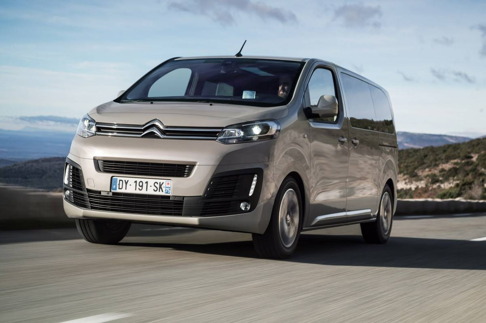

Demandez votre devis
Veuillez écrire votre demande
Mercedes Viano
Spécialiste du transport luxueux de personnes, le Mercedes Viano fait aussi rêver les familles nombreuses. Lors d'un voyage vers le salon de Francfort, nous avons testé toutes ses possibilités dans sa version restylée dotée du nouveau moteur. Il a une capacité de coffre de 850L.
Image
Description
Moteur Nombre de cylindres : 4 Nombre de soupapes par cylindre : 4 Cylindrée : 2143 cc Puissance din : 136 ch au régime de 3800 tr/min Couple moteur : 310 Nm au régime de 1400 tr/min Consommation Réservoir : 75 L Consommation urbaine : 8.8 L / 100 km Consommation mixte : 7.2 L / 100 km
Performances Vitesse maximum : 174 km/h Accéleration 0/100km/h : 14.1 sec Transmission : Arrière Boite : Mécanique Nb. vitesses : 6
Volkswagen Transpoter
Depuis plus de 70 ans, artisans, livreurs et autres prestataires utilisent les différentes générations successives du modèle "Transporter". Solution pratique pour éviter les embouteillages, il est devenu la référence et l'emblème de toute une catégorie de véhicules. Car un point a toujours été et reste toujours important: être à votre service et vous accompagner dans votre travail. Il a une capacité de 850L de coffre.
Image
Description
Moteur Nombre de cylindres : 3 Nombre de soupapes par cylindre : 4 Cylindrée : 999 cc Puissance din : 102 ch au régime de 5000 tr/min Couple moteur : 175 Nm au régime de 1500 tr/min. Consommation Réservoir : 55 L Consommation urbaine : 7.2 L / 100 km Consommation mixte : 6 L / 100 km
Performances Vitesse maximum : 191 km/h Accéleration 0/100km/h : NC Transmission : Avant Boite : Mécanique Nb. vitesses : 5
Volkswagen California
Dormir sous un ciel étoilé. Être réveillé par le bruit des vagues le matin. Découvrir des pays étrangers, en étant comme à la maison : le California 6.1 est synonyme de liberté à l’état pur. Avec son équipement intérieur confortable, et ses détails judicieusement pensés, il transforme chaque voyage en une aventure inoubliable. Profitez de votre indépendance, et voyagez où vous voulez, en emmenant tout ce dont vous avez besoin. Il a une capacité de 22000L de coffre.
Image
Description
Moteur Nombre de cylindres : 6 Nombre de soupapes par cylindre : 4 Cylindrée : 2967 cc Puissance din : 258 ch au régime de 3200 tr/min Couple moteur : 580 Nm au régime de 1400 tr/min. Consommation Réservoir : 80 L Consommation urbaine : 9.2 L / 100 km Consommation mixte : 8.4 L / 100 km. Performances Vitesse maximum : 205 km/h Accéleration 0/100km/h : NC Transmission : 4 roues motrices Boite : Automatique Nb. vitesses : 8
Renault Trafic
Avec sa planche de bord ergonomique, ses éclairages LED, sa sellerie robuste et confortable et ses détails chromés… Du cockpit à l’espace de chargement, Nouveau TRAFIC reprend les codes d’un véhicule particulier pour vous accueillir dans un intérieur encore plus harmonieux.Il a une capacité de coffre de 22000l.
Image
Description
Moteur Nombre de cylindres : 4 Nombre de soupapes par cylindre : 4 Cylindrée : 2298 cc Puissance din : 160 ch au régime de 3750 tr/min Couple moteur : 403 Nm au régime de 1500 tr/min. Consommation Réservoir : 73 L Consommation urbaine : 6.8 L / 100 km Consommation mixte : 6.3 L / 100 km. Performances Vitesse maximum : 172 km/h Accéleration 0/100km/h : NC. Transmission : 4 roues motrices Boite : Mécanique Nb. vitesses : 6
Citroën Berlingo
Précurseur en matière de ludospaces depuis 1996, Citroën présente son Berlingo qui conserve tous les atouts de ses prédécesseurs et gagne en modernité. Citroën Berlingo apporte une réponse innovante et audacieuse en termes de design, de modularité et de praticité. Il a un coffre d'une capacité de 850L
Image
Description
Moteur Nombre de cylindres : 3 Nombre de soupapes par cylindre : 4 Cylindrée : 1199 cc Puissance din : 110 ch au régime de 5500 tr/min Couple moteur : 205 Nm au régime de 1750 tr/min. Consommation Réservoir : 60 L Consommation urbaine : 6.3 L / 100 km Consommation mixte : 5.4 L / 100 km. Vitesse maximum : 175 km/h Accéleration 0/100km/h : 11.5 sec. Transmission : Avant Boite : Mécanique Nb. vitesses : 6